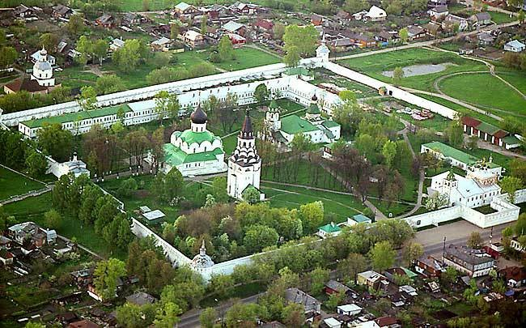
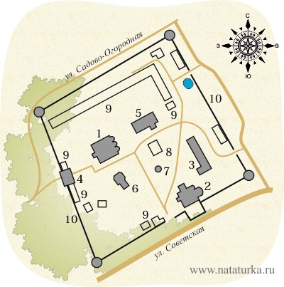

Начало Свято-успенскому женскому монастырю положил преподобный Лукиан Александровский, который по грамоте царя Алексея Михайловича и благословению патриарха Иосифа на месте государева двора известной Александровой слободы в середине XVII века организовал обитель. Затем окормлял монастырь преподобный Корнилий (ум. 1681 г.), во времена которого число сестер достигло двухсот. Царь Федор Алексеевич делал богатые вклады монастырю. 17-летний Петр I скрывался в Александровой слободе в 1689 году после слухов о заговоре против него царевны Софьи. Монастырь стал местожительством сестры царя Марфы (в иночестве Маргариты), насильно постриженной по подозрению в поддержке стрелецкого бунта в 1698 году. Из Суздальского Покровского монастыря в 1718 году сюда была переведена первая супруга Петра Евдокия Лопухина. Это был крупный монастырь, поэтому во время реформы Екатерины II он был отнесен к первому классу (всего четыре монастыря в империи) и получал средства на содержание из казны.
Сто лет назад во время революции здесь проживало около трехсот насельниц. В 1923 году монастырь ликвидирован, а имущество передано организованному музею. Наряду с культурным учреждением здесь было овощехранилище, молокозавод, кондитерская, а также планетарий и кинопрокат.
10 ноября 1991 года по благословению архиепископа Владимирского и Суздальского Евлогия Успенский монастырь открылся вновь.
Сегодня монастырь делит территорию обители с музем-заповедником «Александровская слобода».
В архитектурный ансамбль Успенского монастыря входят: Покровская церковь, Распятская церковь-колокольня, Троицкий собор, Успенская церковь, Церковь Сретения Господня с больничным корпусом, Церковь великомученика Федора Стратилата, Келейный корпус, Водоналивная палатка, Настоятельские покои.
Адрес: г. Александров, Музейный проезд, д. 20.
Официальный сайт: http://alexandrov-obitel.ru

Успенский монастырь

Схема монастыря
1. Троицкий собор
2. Успенский собор
3. Церковь Сретения Господня
4. Надвратная церковь Феодора Стратилата
5. Покровская Церковь
6. Распятская церковь-колокольня
7. Часовня
8. Дом настоятельницы
9. Келейные корпуса
10. Ограда с башнями